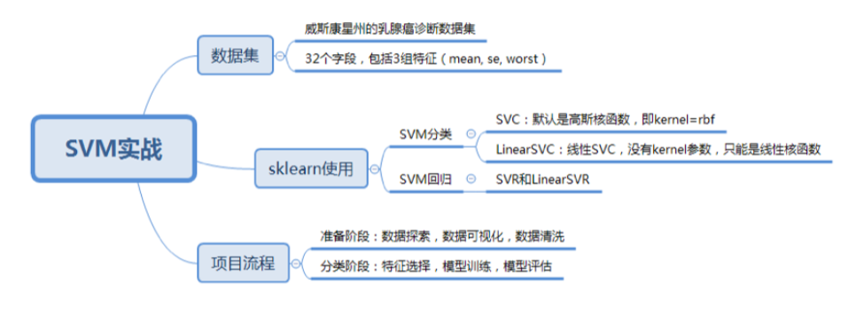

23-SVM（下）：如何进行乳腺癌检测？
如何在sklearn 中使用SVM
SVM 既可以做回归，也可以作分类器
回归使用 SVR（Support Vector Regression） 或者 LinearSVR
线性分类器，处理线性可分的数据
分类器使用 SVC(Support Vector Classification) 或者 LinearSVC
非线性数据
如何创建一个 SVM 分类器呢?
SVC 的构造函数
model= svm.SVC(kernel='rbf', C=1.0, gamma = 'auto')
kernel 代表核函数的选择，
- linear 线性核函数。 线性可分，运算速度快，效果好
- poly 多项式核函数。数据从低维空间映射到高维空间，计算量大
- rbf 高斯核函数(默认)。数据从低维空间映射到高维空间，通常性能不错
- sigmoid ：sigmoid 核函数。通常用在神经网络的映射中
C 代表的是目标函数的惩罚系数，惩罚系数指的是分错样本时的惩罚程度，默认 1.0， C 越大，准确率越高，但同样容错率会越低，泛化能力会变差
gamma 代表核函数的洗漱，默认为样本特征的倒数 gamma = 1/n_features
训练 model=svm.LinearSVC() 预测 model.predict(test_X)
如何进行乳腺癌检测
import numpy as np
import pandas as pd
import matplotlib.pyplot as plt
import seaborn as sns
import warnings
from sklearn.model_selection import train_test_split
from sklearn.preprocessing import StandardScaler
from sklearn import svm
from sklearn import metrics
warnings.filterwarnings('ignore')
%matplotlib inline
# 导入并观察数据
data = pd.read_csv('data.csv')
pd.set_option('display.max_columns', None)
print(data.columns)
print(data.head())
print(data.describe())
# 将特征字段分为三组
features_mean = list(data.columns[2:12])
features_se = list(data.columns[12:22])
deatures_worst = list(data.columns[22:32])
# 数据清洗
# 删除id列
data.drop('id', axis=1, inplace=True)
# 将标签B良性替换为0，M恶性替换为1
data['diagnosis'] = data['diagnosis'].map({'B':0, 'M':1})
# 将肿瘤诊断结果可视化
plt.figure(figsize=(8, 6))
sns.countplot(data['diagnosis'], label='Count')
# 热力图呈现feature_mean字段之间相关性
corr = data[features_mean].corr()
plt.figure(figsize=(14, 14))
sns.heatmap(corr, annot=True) # annot显示方格中数字
# 特征选择：
# 1、mean，se，worst是对同一组内容的不同度量方式，保留mean
# 2、radius_mean，perimeter_mean，area_mean三个相关属性大，保留radius_mean
# 3、compactness_mean，daconcavity_mean，concave points_mean三个相关属性大，保留compactness_mean
# 特征选择
features_remain = ['radius_mean','texture_mean', 'smoothness_mean','compactness_mean','symmetry_mean', 'fractal_dimension_mean']
# 抽取30%数据作为测试集，其余作为训练集
train, test = train_test_split(data, test_size=0.3)
train_X = train[features_remain]
train_y = train['diagnosis']
test_X = test[features_remain]
test_y = test['diagnosis']
# 数据标准化
train_X = StandardScaler().fit_transform(train_X)
test_X = StandardScaler().fit_transform(test_X)
# 训练svm并测试
model = svm.SVC()
model.fit(train_X, train_y)
prediction = model.predict(test_X)
# 计算准确率
print('准确率为：', metrics.accuracy_score(prediction, test_y))
